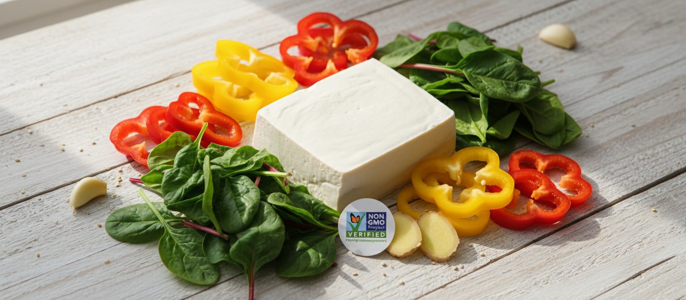
바른먹거리Non-GMO 인증
풀무원은 국내 최초로 Non-GMO 선언을 하고 유전자 재조합 식품을 사용하지 않습니다.
Earth Log
풀무원의 지속가능한 경영과 식생활 혁신을 이어가는 다양한 이야기를 소개합니다. 환경과 사람을 생각하는 작은 실천이 더 나은 내일을 만듭니다.

바른먹거리풀무원은 국내 최초로 Non-GMO 선언을 하고 유전자 재조합 식품을 사용하지 않습니다.
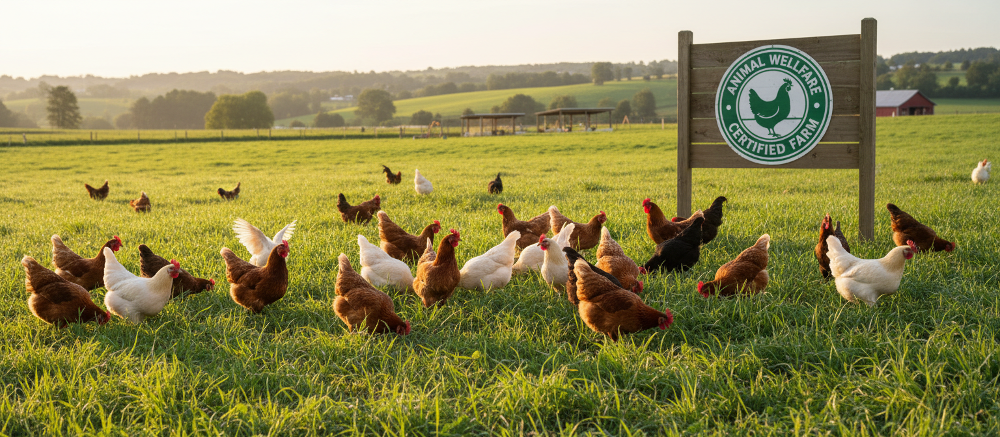
동물복지풀무원은 동물복지 인증 달걀만을 사용하여 윤리적 식품 생산을 실천합니다.
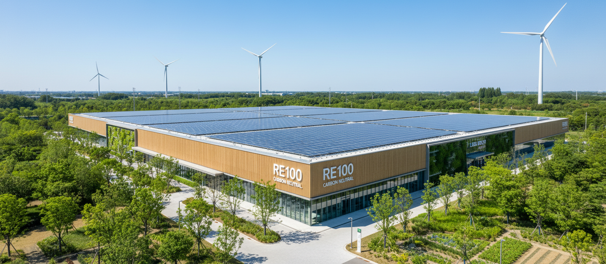
탄소중립풀무원은 2050 탄소중립 목표를 선언하고 RE100에 가입하여 재생에너지 전환을 추진합니다.
블로그 후기
직접 경험한 지구식단의 맛있는 이야기와 일상을 확인해 보세요.
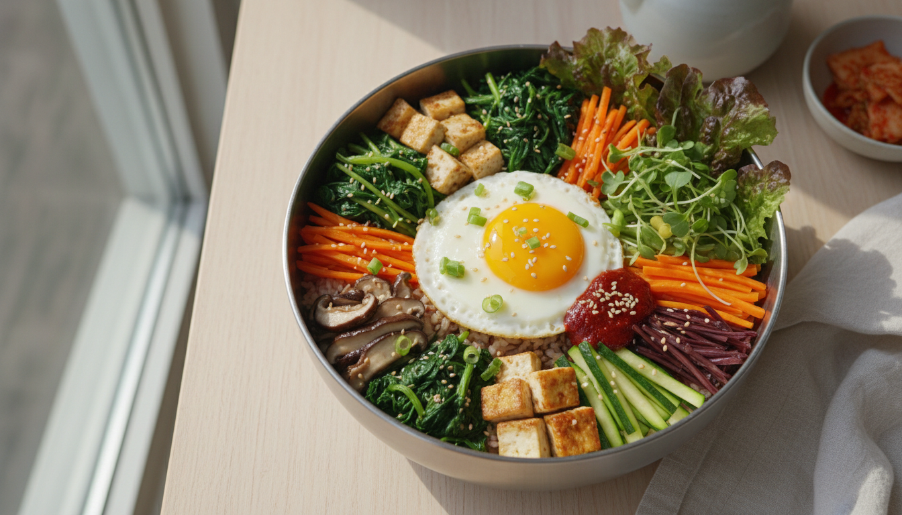
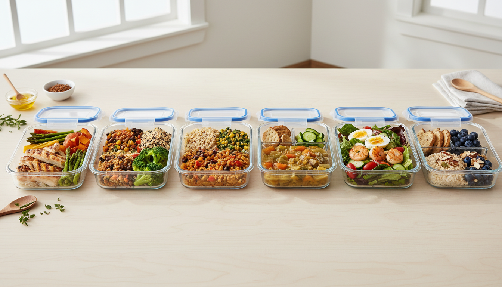
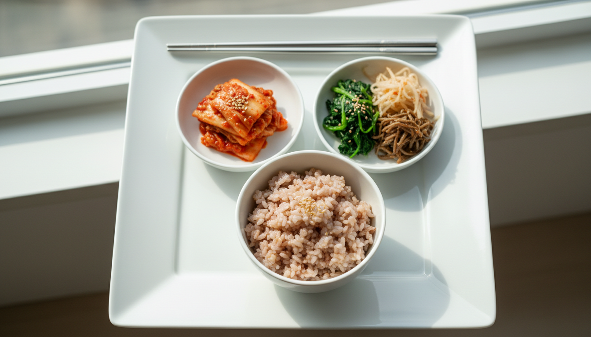
바른먹거리부터 환경과 사회까지, 풀무원의 다양한 이야기를 전합니다.
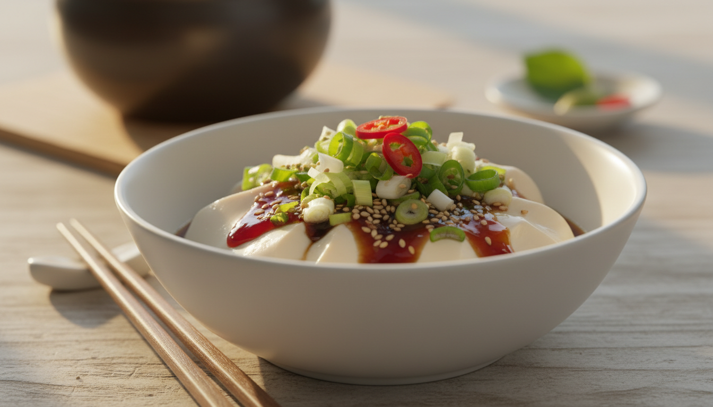
레시피2026.07.15
풀무원 두부를 활용한 간편하고 맛있는 건강 레시피를 소개합니다.
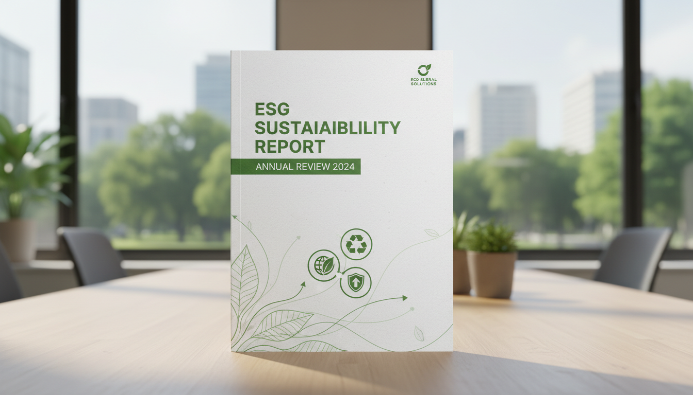
ESG2026.07.20
풀무원의 환경·사회·지배구조(ESG) 경영 성과를 한눈에 확인하세요.
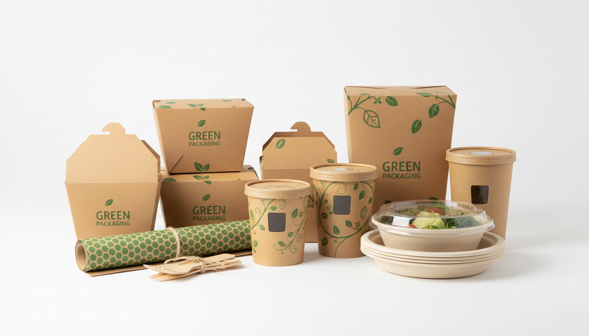
포장재2026.06.28
재활용이 쉬운 단일소재 포장재로의 전환 과정을 소개합니다.
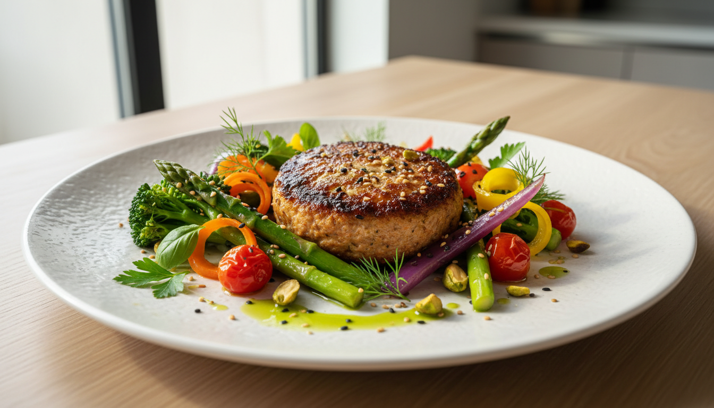
뉴스2026.07.01
식물성 단백질 시장을 선도하는 풀무원의 새로운 도전을 소개합니다.
풀무원이 전개하는 바른먹거리 캠페인과 사회공헌 활동을 소개합니다.
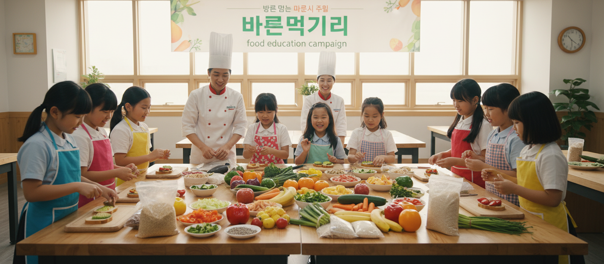
캠페인어린이 식습관 개선, 로하스 식생활 교육, 비건 체험 프로그램을 통해 건강한 식문화를 확산합니다.
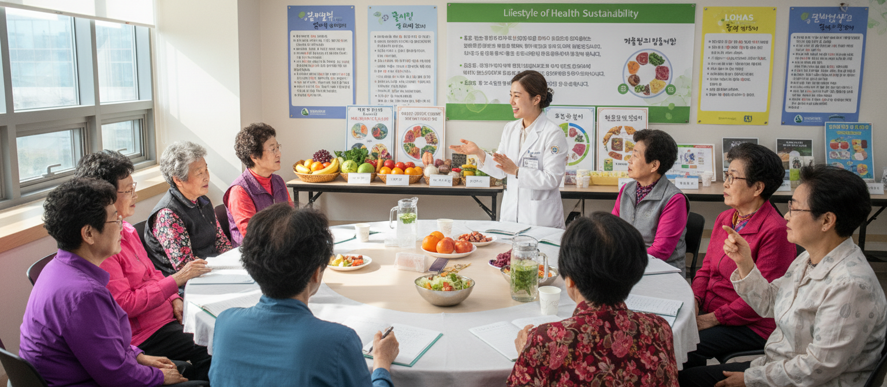
사회공헌풀무원재단을 통해 어린이·청소년 대상 바른먹거리 교육과 시니어 영양 개선 프로그램을 운영합니다.
가장 많은 관심을 받고 있는 풀무원 콘텐츠를 확인해보세요.
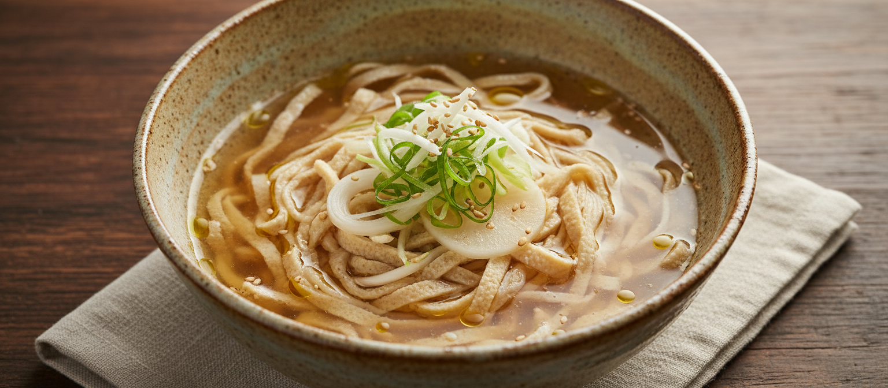
인기탄수화물은 줄이고 단백질은 높인 두부면 활용 레시피를 소개합니다.
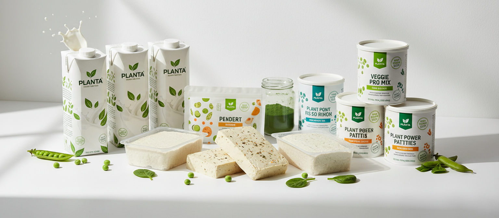
트렌드글로벌 식물성 식품 시장 동향과 풀무원의 전략을 살펴봅니다.
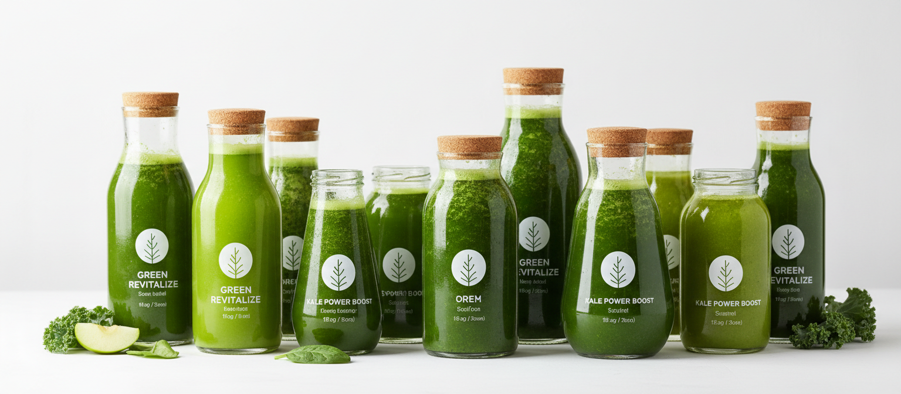
건강하루 한 잔, 풀무원 녹즙으로 시작하는 건강 습관을 소개합니다.